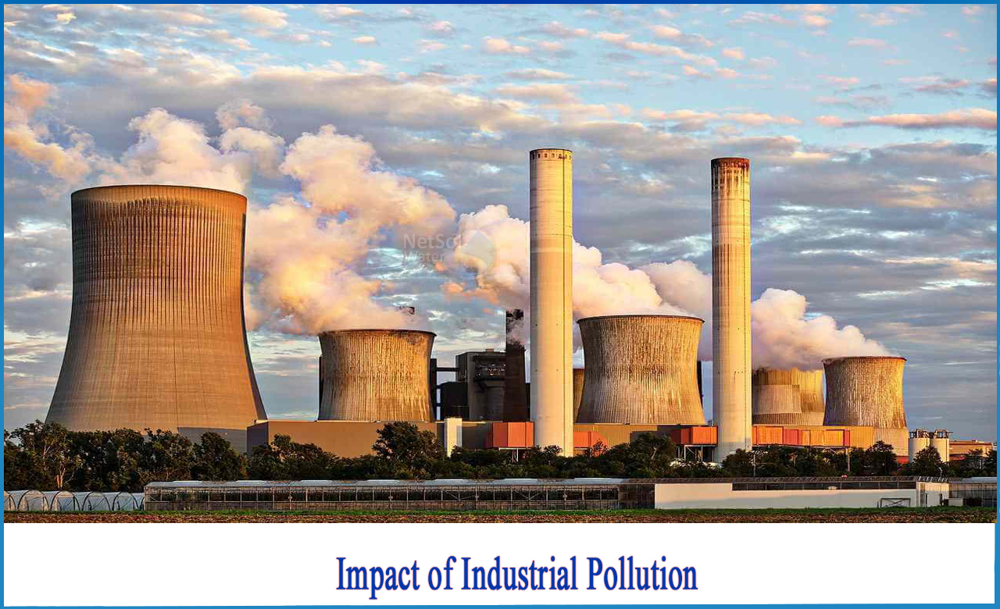
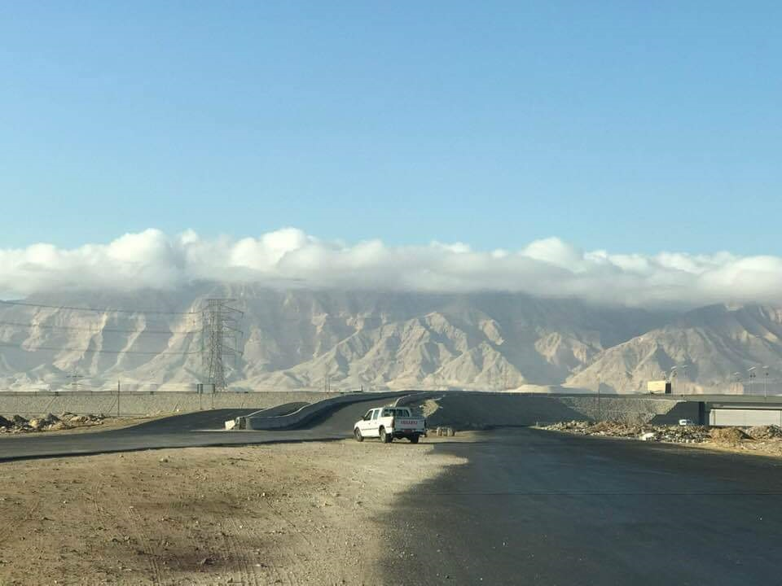
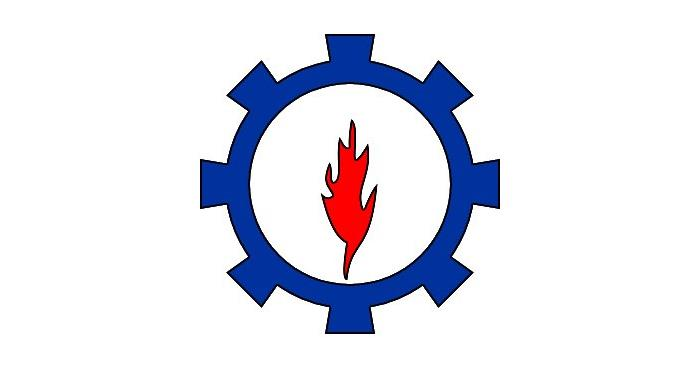

Change In Average Temperatures In The City Of Ataqa
Over The Years From 2003 To 2023 Due To Air Pollutants Produced By Factories
| GO TO INDUSTRY | INDUSTRY | NO |
|---|---|---|
| PETROCHEMICAL | 1 | |
| Mining | 2 | |
| Wooden and furniture industries | 3 | |
| Chemical industries | 4 | |
| Engineering and electronic industries | 5 | |
| Building materials industries | 6 | |
| Automotive industries | 7 | |
| Other industries | 8 |
Industries and factories release numerous pollutants into the atmosphere as well as the land, air and waters. It has been found more than half of all pollution is as a result of industrial and producing activities. It solely displays however industries and factories are answerable for giving off poisonous and dangerous materials into the atmosphere. Illnesses, loss of life, and destruction of the system are a number of the pollution outcomes that take years to manifest. Even so, there is a large range of pollution effects together with their serious consequences.
is among the foremost serious outcomes of industrial pollution, witnessed on the account of the steady rise of industrial activities. Industries release into the atmosphere a range of greenhouse gases as well as CO2 (CO2) and hydrocarbons (CH4). These gases absorb terrestrial radiation from the sun thereby increasing the average temperature of the planet, resulting in warming. Global warming has many severe effects on human health and therefore the atmosphere. Rise in water levels, melting of glaciers, extinction of polar species, tsunamis, flooding, and hurricanes are a number of the direct effects of global warming. It also causes exaggerated incidences of diseases like infectious disease, plague, malaria, zoonosis and so on.
The industries are the major cause of air pollution. The incomplete combustion of fossil fuels and coals, petroleum etc releases very harmful gases such a carbon dioxide, carbon monoxide, oxides of nitrogen, oxides of sulphur dioxide and other greenhouse gases which absorbs the sun Rays and increases the average temperature of earth resulting in global warming .The gases such as oxides of nitrogen, sulphur and carbon reacts with rainwater which causes acid rain as a result of which the rain turns the soil into acidic nature and thus affects the plants and also affects human beings causing respiratory diseases.
Video courtesy of Industry Factories
The investigated area (Suez Bay) is located between longitudes 320 32" and 32° 53' \ E and latitudes 29° 53' and 29 89 N. several industries have been established along the western coastal stretch of the Suez Bay down to Adabyia in the south
The Ataqa Industrial Zone was chosen because it contains industrial activities in the Gulf of Suez, such as: Petroleum, petrochemical, granite and marble factories. Industries in Suez City that are functional at present include a fiberglass boat building plant, machine shop and assembly plant, merchant steel mill, ship scrapping yard. general engineering foundry, ceramic tiles plant, and denim plant. Industrial effluents, in the form of thermal pollution from power and desalinization plants, hypersaline brine water from desalinization plants of Ain Sukhna hotels, particulate matter and mineral dust from fertilizer and cement factories, and chemicals and organic wastes from food processing factories at Suez City, contribute to the land-based sources of pollution affecting coastal waters in the Gulf of Suez and neighbouring
The study discusses monitoring the distribution of industrial areas in the city of Suez, focusing on the Ataqa industrial area. The objectives of the study are
Introduction by man, from his industrial activities, waste matter or surplus energy into the environment, which directly or indirectly causes damage to man and his environment Industrial wastes take many forms, as liquid, solid, gas or composite.
Industrial air pollution resulting from the release of pollutants into the atmosphere by industrial facilities. The most important primary pollutants resulting from industrial activities are
Liquefied petroleum gas, also known as liquefied petroleum or liquefied natural gas, is a gaseous fuel consisting mainly of hydrocarbons derived from crude oil or natural gas
What is NO2 and how does it get into the air? Nitrogen dioxide (NO2) is one of a group of highly reactive gases Nitrogen dioxide mainly enters the air as a result of fuel combustion. Nitrogen dioxide is made up of emissions from cars, trucks, buses, power plants, and off-road equipment Effects of NO2 Inhaling air with a high percentage of nitrogen dioxide can irritate the bronchi of the human respiratory system. Longer exposure to elevated concentrations of nitrogen dioxide may contribute to asthma and may increase susceptibility to respiratory infections
What is carbon dioxide? Carbon dioxide is a colorless and odorless gas. The largest sources of carbon dioxide in outdoor air are cars, trucks, and other vehicles or machinery that burn fossil fuels. A variety of items in your home such as kerosene, gas heaters, chimneys, leaky furnaces, and gas stoves also release carbon dioxide and can affect indoor air quality What are the harmful effects of carbon dioxide? Breathing air with a high percentage of carbon dioxide reduces the amount of oxygen that can be transported in the bloodstream to vital organs such as the heart and brain
is a hydrocarbon that is an essential component of natural gas. Its presence in the atmosphere affects the Earth's temperature and climate system. Sources of anthropogenic emissions include landfills, oil and natural gas systems, agricultural activities, coal mining, stationary and mobile combustion, wastewater treatment, and some industrial processes The main source of methane emissions is coal production. Of natural gas and oil systems
What is formaldehyde? Formaldehyde is a colorless, flammable gas Where is formaldehyde found? In Resins used in the manufacture of composite wood products Building and insulation materials emissions from fuel-burning appliances such as gas stoves or kerosene heaters; And cigarette smoke Health effects of formaldehyde Formaldehyde can cause irritation to the skin, eyes, nose, and throat. High levels of exposure may cause some types of cancer
what is ozone and where is it in the atmosphere? Ozone (O3) is a highly reactive gas composed of three oxygen atoms. It is both a natural and a man-made product that occurs in the Earth's upper atmosphere How does atmospheric ozone affect human health? It absorbs ultraviolet rays, reducing human exposure to harmful ultraviolet rays that cause skin cancer and cataracts When inhaled, it chemically reacts with many biological molecules in the respiratory system, leading to a number of adverse health effects